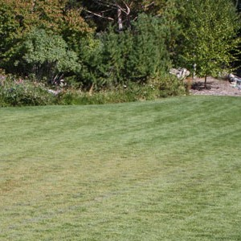

HOME PAGE
Want to mow a perfect lawn? Here’s how you do it
By Lance Ellis

One of the most mundane jobs in the world is mowing your lawn. You get into the habit of doing it on a certain day, get it done, it looks nice, and then you’re happy it’s over with and behind you. But like anything, there are better ways to do it and to make the end product better. If you want to improve the health and beauty of your lawn, here are a few tips to make it a little nicer. Sharpen your mowing blades, or buy new blades if they can’t be sharpened anymore. This simple maintenance trick has many benefits.
First, your mower engine will have to work less to cut the grass as you go across the lawn. If I was to look at your lawn after mowing and the tips of the grass blades are frayed and look like they have been chewed off rather than cleanly cut, then that’s a great sign you have dull blades. A good rule of thumb is to sharpen your blades every other month. While it isn’t going to kill your lawn to mow with dull blades, it can cause more stress on your grass as it recovers and grows back before the next mowing. More than anything, it causes your lawn to have a light brown color. All the chewed leaf edges turn brown as they dry up and die on the end. A freshly cut lawn with sharp blades will show a nice green color, rather than frayed edges when you’re done. Cutting your lawn at the right height is very important to its overall health and vigor. It affects the grass’s ability to withstand drought and use water and fertilizer more efficiently. If done properly it can also prevent weed issues and reduce the need for herbicides.The majority of lawns are a mix of varieties of grasses to give you the benefits and strengths that each one offers. Some tolerate shade, some tolerate heat, some can handle foot traffic better than others, etc. Most lawns have a strong percentage of Kentucky Blue Grass, which should be mowed to a height of 2.75 to 3.5 inches tall. That may seem really tall to most homeowners who want a manicured and clean trimmed look, but for this particular variety of grass, the length has a distinct impact on health, longevity, and water usage. Other varieties of grass commonly found in most lawns include Perennial Ryegrass, Fine Fescue, and Tall Fescue.
These other grasses all require that the minimum cutting height is between two and three inches, and no shorter. The taller the grass is allowed to grow above the soil surface, the longer the root system will be below ground. This longer root system then has the ability to better use water deeper in the ground as well as nutrients that may have been leached deeper into the soil. This can help to prevent excess nutrients, such as nitrogen, from moving deeper into the soil, and into a water supply. To use a mulching blade or not? I get this question a lot regarding what type of blade to use on your mower. For most situations, a mulching blade is best. I don’t recommend collecting and removing your grass clippings after mowing. Instead, just use a mulching blade and let the finely pulverized (mulched) grass clippings remain on the lawn. There is a great deal of nitrogen that is reapplied each season by leaving the mulched clippings on the lawn, as well as organic material that in time can help improve the quality of soil.
source: https://www.eastidahonews.com/2021/07/want-to-mow-a-perfect-lawn-heres-how-you-do-it/
The Daily Update
649 S 2nd W
Rexburg,ID
208-555-2897
commych029@gmail.com